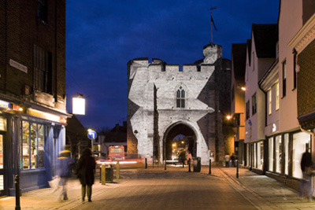
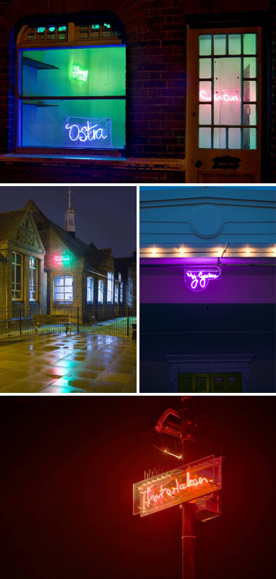
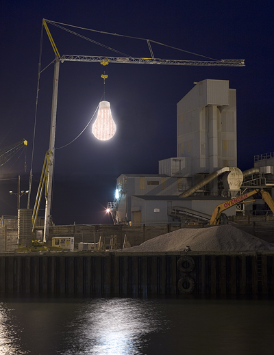

Curated and project-managed by Sarah Collicott of InSite Arts, Sparks was a temporary programme of three new media and light based commissions. The programme sought to animate three quite different townscapes during the winter nights 2005 - Whitstable, Herne Bay and Canterbury.
Sparks began through a competitive process, eight artists being invited to develop concept proposals.
The works ranged from a large scale projection project 'Gatefold' by Anna Heinrich and Leon Palmer, to intimate neon installations generated by drawings of local residents of Herne Bays' dream destinations 'Bay Windows' by Vong Phaophanit and Claire Oboussier. In sharp contrast, Claire Morgan's huge domestic light bulb which was suspended on the dockside in Whitstable, glowing and flickering for two months.


